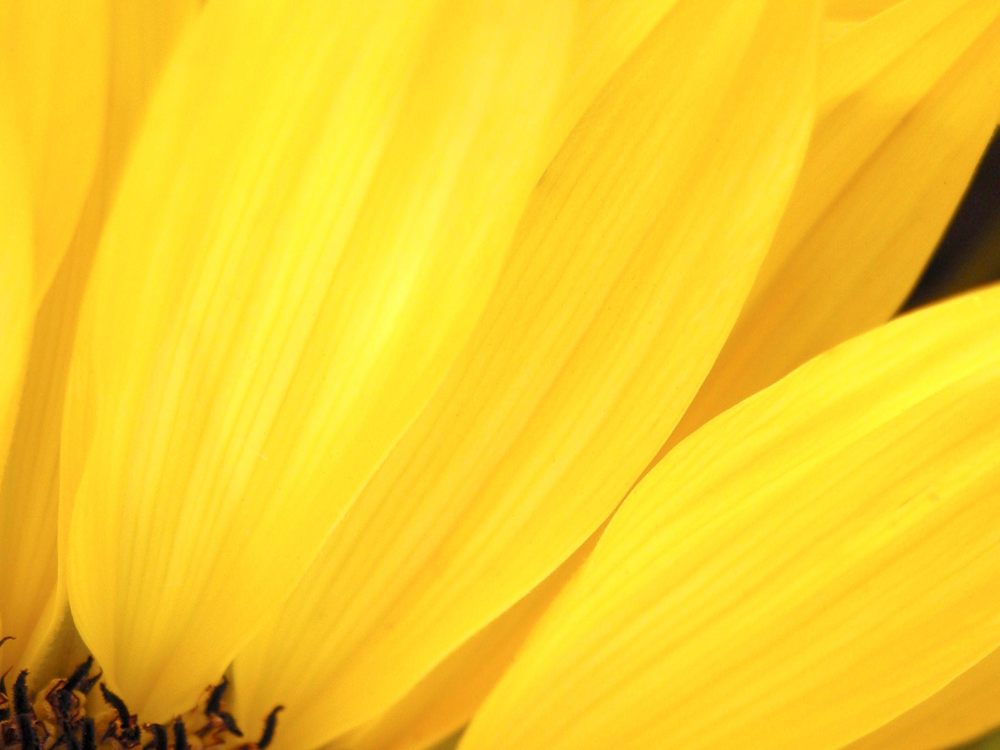

Grafika



Toto je text uplne odveci :D Aber das macht nix xD
Najhlavnejšou z nich je Mária Alexandrovna Mordasovská - ve¾mi zámo�ná pani, ktorá v celom meste nemá páru, ka�dého vie uzemni�, nikdy ju nikto nemohol dostatoène urazi�, skôr naopak, ona je tou, ktorej sa nikto neodvá�il niè poveda�, lebo sa bál jej jazyka. Má vplyv na všetkıch a bez nej by v meste bola nuda.
Má man�ela, ktorı �ije na dedine, nad ktorım panuje a ku ktorému sa správa horšie ako k poslednému otrokovi.
Zinaida - jej dcéra, mladá, s dlhımi èiernymi vlasmi, pyšná má iba jednu chybu. Má 23 rokov a doteraz sa nevydala. Dôvodom zrejme nie je iba jej pıcha, ale zrejme aj to, �e v Mordasove sa pre òu nenašiel �iaden vhodnı �eních. Jej matka by ju bola najradšej vydala za následníka trónu.
Uchádza sa o òu Mozg¾akov, 25 roènı mladík, ktorı pod¾a názoru matky je síce peknı, ale korunovanı hlupák. Zina ho nemiluje, správa sa k nemu odmerane a chladno, preto�e jej srdce horí láskou k obyèajnému uèite¾ovi z chudobnej èasti mesta. Tento vz�ah im nevyšiel, písala mu aj zamilované listy a jeden z nich po hádke s òou zverejnil niekomu z dediny a odvtedy sa u� nestretli.
Mozg¾akov Zinu po�iadal aj o ruku, ale ona ho stále iba zavádza a na�ahuje, nechce sa zaòho vyda�, ale keï�e nemá pytaèov, tak je nútená o òom uva�ova�.
Jedného dòa prichádza do mesta knie�a, ve¾mi dobrı známy Márie Alexandrovny. Kedysi to bıval fešák, dámy okolo neho obsakovali jedna rados�, ale teraz ve¾mi zostarol, usadil sa, nestıkal sa takmer s nikım.
Je to pomätenı starı pán, ktorému u� pamä� takmer vôbec neslú�i, niè si nepamätá, mıli si realitu so snom. Okrem toho je aj ve¾mi umelı. Povráva sa o òom, �e má korkovú nohu, tvár má zo strún, jedno oko má sklené, bokombrady aj koziu briadku má umelú a nosí parochòu.
Mária Alexandrovna sa to rozhodne zneu�i� a dostane nápad, �e svoju dcéru vydá za knie�a, ktoré je aj tak jednou nohou na smrte¾nej posteli a po jeho smrti bude jej dcéra kòa�nou a aj jej z toho nieèo "kvapne".
Zdôverí sa s tım nápadom svojej dcére, ktorá najprv tvrdošijne odmieta, no nakoniec pod jej tlakom povolí pod podmienkou, �e jej objasní ako to dosiahne, aby sa vyhla ïalším špinavostiam.
Akousi malou preká�kou je tu ešte Mozg¾akov, ktorého si Mária omotá okolo prsta a sladkımi reèami a klamstvami o tom, ako ho jej dcéra miluje a �e po smrti knie�a�a si urèite vezme jeho.
Teraz u� niè nebráni Márii Alexandrovne aby zorganizovala svadbu skôr, ako jej na túto špinavos� prídu ostatní. Opijú knie�a, Zina na príkaz matky zaspieva jednu krásnu francúzsku romancu, ktorá mu vynorí spomienky na mlados� a v takomto dojatí ju nepriamo po�iada o ruku. Mária Alexandrovna bola od vzrušenia celá bez seba...
Vo chvíli, keï u� bolo všetko na spadnutie sa všetko zmení. Takmer všetky klebetnice sa zozbierajú a prídu ju navštívi� do jej domu, kde neustálymi nará�kami sa sna�ia zisti�, èi je to s tou svadbou pravda, alebo nie. Práve v tento deò po prvıkrát Mária Alexandrovna stráca pevnú pôdu pod nohami, zaèína blednú� od zlosti, �e jej plán je mimoriadne ohrozenı.
Mozg¾akov tesne predtım nahováral knie�a�u, �e sa vôbec nemusí �eni�, �e sa mu to iste iba snívalo, �e na druhı deò ho odvezie do hotela a potom pôjde do cudziny.
Knie�a schádza medzi hostí a pri rozhovore sa všetko ešte viacej zamotá. On si nepamätá niè o �iadnej svadbe, tvrdí, �e sa mu to akiste iba snívalo, ale �e to bol èarovnı sen. Mária nemô�e znies� takú porá�ku, zaène nadáva� a zosmiešòova� knie�a. Zina
.jpg)
.jpg)
.jpg)
.jpg)
.jpg)